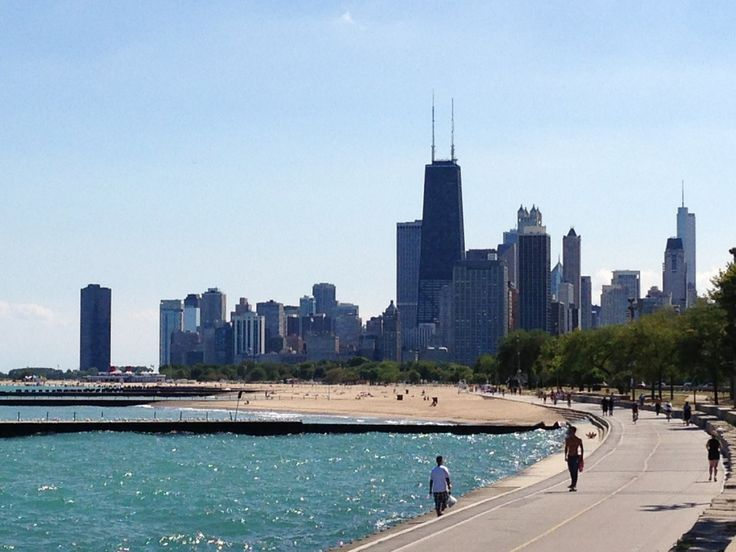
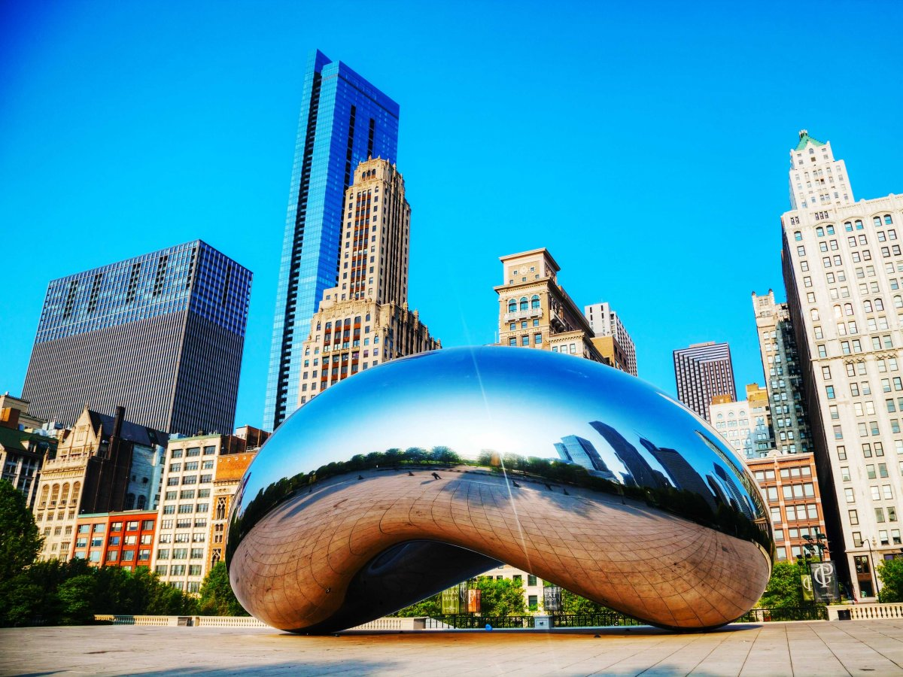
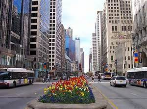
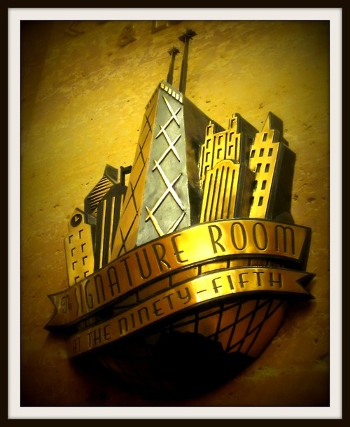
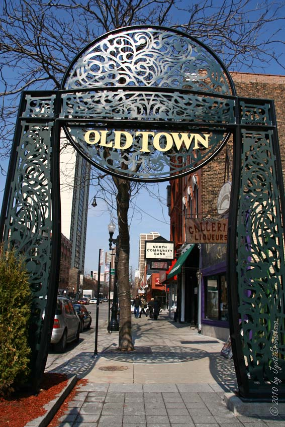

I have spent the past four year living in Chicago and have been asked more times than I can count by friends and family passing through if I could put together an itinerary for them for a day in Chicago. Most of the time I end up scribbling something quickly on a piece of paper and calling it day. However, today I have decided to share with the world a detailed itinerary of a perfect day in the windy city. **This itinerary assumes it is a sunny and warm day in Chicago**

The best way to start your morning in Chicago is by taking a long walk or run by the lake. You will have a choice of either going North or South and I would suggest walking/running South because when you get to the Shedd Aquarium you will get the chance to enjoy spectacular views of the city skyline. Once you have had your morning stroll you can then enjoy an incredible brunch at one of my favorite spots which include:
 
After a great meal in the loop, you can walk over to one of the most popular spots in the city, Millenium Park, to check out the famous "Bean." Give into the tempatation to take pictures of your reflection off the bean. It's fun and where else can you do such a thing! After strolling through the park I suggest heading north and walking up the Magnificent Mile. Not only will it be beautiful and you'll get to see some of the most historic buildings in the city but you will also get the chance to do some excellent window (or real) shopping, depending on your preference.The Magnificent Mile is Chicago's version of New York's 5th avenue where every store you could imagine is at your fingertips. Forewarning: It get extremely crowded in the summers.

Once you get close to the end of the Magnificent Mile you will reach yet another famous building called the Hancock Building. There you can rest your feet, order a cocktail, and enjoy some breathtaking views of the city from the 95th floor!
After a few cocktails at the Signature Lounge, it is time to get moving again. This time you will be heading West (away from the lake) until you get to State street. From there you can walk all the way North till you hit Lincoln Park. This walk is not only beautiful but it will give you an idea of the different neighborhoods in the city including Gold Coast, Old Town and a taste of Lincoln Park. Each neighborhood has it's distinct flavor and if you get hungry on the walk or need a coffee I would suggest looking into the following spots. But don't ruin your appetite because we have got a great late lunch planned for you!
After getting another great walk in, I suggest taking the next few hours to enjoy a spectacular lunch at Cafe Babareeba. It is a very well known Spanish Tapas restaurant in the heart of Lincoln Park. Not only do they have amazing Sangria but delicious food that appeals to everyone. The ambiance is also friendly and fun. Best of all, the menu is reasonably priced! Spend as long as you want there, and if it's a nice day you may get lucky and get a table in the patio!

And now ideas for the part of the day you have been looking forward to the most... Chicago nightlife! You might be a little surprised when I steer you away from the very popular (extremely touristy) River North scene and instead push you to spend your evening in Old Town. Old Town is underrated and actually has so much to offer including some of the best improv/comedy in the city (Second City), a great bar scene all on one street (Wells Street), amazing restaurants that are open late and one of my favorite spots to dance the night away (Stanleys). You can't go wrong in this neighborhood, I promise. However, if you really don't enjoy this area you are only a 15 minute cab ride to the heart of the large bar scene in Chicago located in River North.